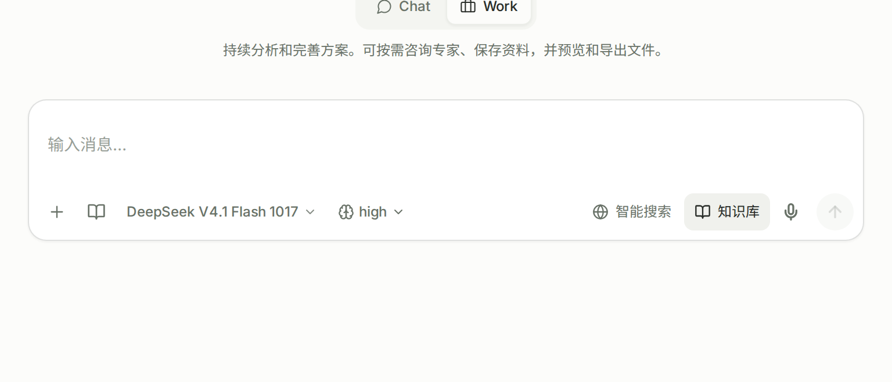
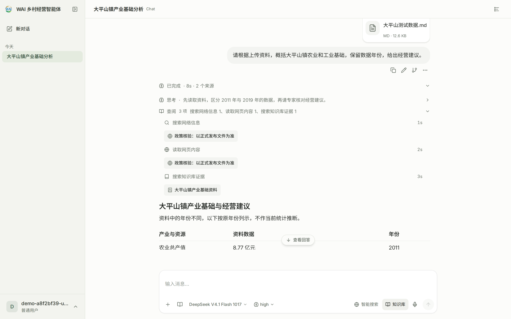
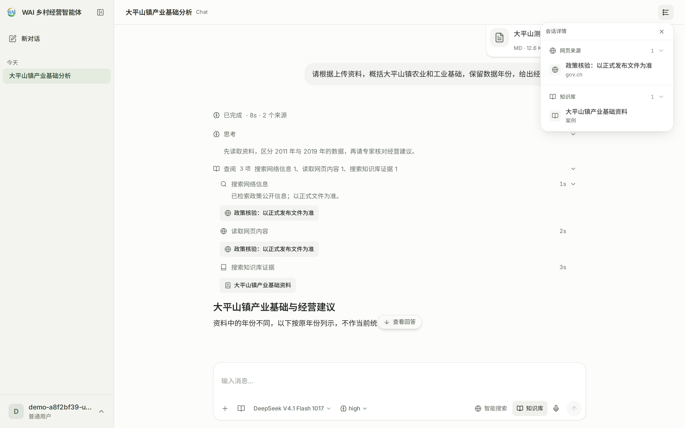

资料与检索
知识库
#概述
知识库是产品内置的乡村经营资料库，里面已有政策文件、案例材料和经验文章。所有登录用户在提问时都可以让助手读取它，管理员可以继续补充和整理。
知识库里的材料分三类：
| 类型 | 是什么 | 例子 |
|---|---|---|
| 政策 | 政策文件、实施意见、政府工作报告 | 乡村全面振兴实施意见、县政府工作报告 |
| 案例 | 完整的实践案例，含做法和结果 | 某地盘活集体资产的做法与成效 |
| 经验 | 方法总结、经验文章 | 县域产业选择的「四步法」 |
材料由管理员上传和维护。普通用户只能使用，不能修改。管理员怎么维护，见维护知识库。
#开启知识库
输入框下方一排按钮里有「知识库」，书本图标。点一下开启，按钮变成高亮；再点一下关闭。

开启后，发送问题。助手根据问题判断是否需要查知识库。
#知识库检索流程
助手不会把整个知识库读一遍，而是分三步：
- 发现相关文档。 按问题找出可能有用的条目，看每条的标题和摘要。过程区显示「发现知识文档」。
- 搜索证据。 在相关条目里，按问题检索具体的段落。过程区显示「搜索知识证据」。
- 阅读材料。 读取选中的条目，了解完整的做法和条件。过程区显示「查阅知识库材料」。

#来源标注
回答引用了知识库，会在右侧会话详情的「来源」里列出对应的条目。知识库来源和网页来源的区别是：
- 网页来源标明网站域名，点击在新窗口打开原网页。
- 知识库来源标明「知识库」，点击查看条目内容。

#提问方法
问题里写清地区、时间和比较对象，助手才能挑出合适的条目。
请先从知识库里找与「集体资产盘活」相关的政策和案例，再比较它们对我们村的项目有哪些可借鉴的条件。知识库里有哪些关于县域产业选择的方法？请比较它们的步骤，并说明哪一种更适合我们这种以养殖为主的镇。#知识库、联网搜索、上传文件：怎么选
| 内容从哪来 | 谁能用 | 适合做什么 | |
|---|---|---|---|
| 上传文件 | 你自己的文件 | 只有你，在这段对话里 | 分析你们自己的资料，如年报、预算表 |
| 知识库 | 管理员整理的公共资料 | 所有登录用户 | 参考政策、借鉴案例和经验 |
| 联网搜索 | 互联网上的网页 | 所有开启搜索的用户 | 查最新的政策、行情和新闻 |
三者可以同时开启。例如：上传你们的项目计划书，开启知识库查类似案例，再开启联网搜索查最新政策，一次问完。